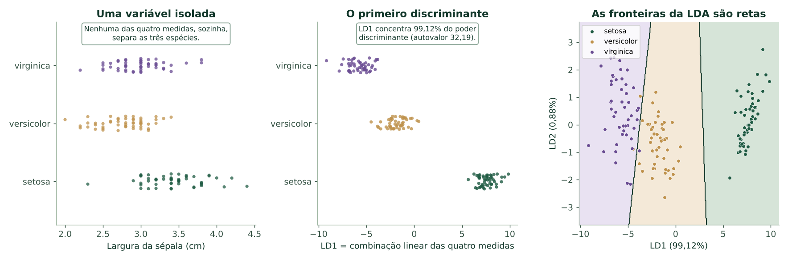
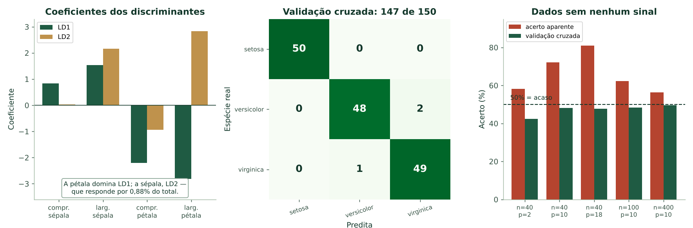

Análise discriminante linear (LDA)
Encontra as combinações lineares das variáveis que melhor separam grupos conhecidos e as usa para classificar observações novas.
Comece por aqui
A análise discriminante linear tem dois usos que convém separar desde o início. Como descrição, ela encontra as combinações lineares das variáveis que melhor separam grupos conhecidos — é a prima da MANOVA, e usa exatamente as mesmas matrizes. Como classificação, ela constrói uma regra para atribuir uma observação nova a um dos grupos.
Em k-médias e agrupamento hierárquico os grupos são o que se procura. Aqui eles são dados, e o que se procura é a regra que os separa. Em iris, a espécie entra na análise como resposta — ao contrário daquelas duas fichas, em que ela foi deliberadamente escondida do algoritmo e revelada só no fim.
O que é a análise discriminante
Supondo que cada grupo \(i\) seja uma normal multivariada com média \(\mu_i\) e a mesma matriz de covariância \(\Sigma\), a regra que minimiza o erro esperado atribui \(x\) ao grupo de maior probabilidade a posteriori. Aplicando a regra de Bayes e tomando logaritmos, os termos quadráticos em \(x\) são idênticos nos \(k\) grupos e se cancelam quando se comparam dois deles. Resta uma função linear, e é daí que vem o nome.

Os eixos canônicos são os autovetores de \(W^{-1}B\), com \(W\) a matriz de dispersão dentro dos grupos e \(B\) a de entre grupos — exatamente as matrizes \(E\) e \(H\) da MANOVA. Em iris, a soma dos dois autovalores, 32,4773, é o traço de Hotelling–Lawley daquela ficha, e o primeiro autovetor é o LD1 que MASS::lda() devolve. A MANOVA pergunta se os grupos diferem; a análise discriminante pergunta em que direção.
Pressupostos e como verificá-los
| Pressuposto | Por que importa | Como verificar |
|---|---|---|
| Normalidade multivariada em cada grupo | A regra de Bayes foi derivada dela. | MVN::mvn() e teste de Mardia; a regra é razoavelmente robusta a desvios moderados. |
| Mesma matriz de covariância | É o que torna a fronteira linear. | M de Box; se rejeitar, considere a QDA. |
| Observações independentes | Erros-padrão e validação pressupõem isso. | Delineamento. |
| n suficiente em relação a p | Com p próximo de n, o classificador decora os dados. | Regra prática: ao menos 5 a 10 observações por variável em cada grupo. |
| Ausência de multicolinearidade severa | W precisa ser invertível. | Determinante e número de condição de W. |
| Variáveis em escalas tratáveis | A LDA é invariante a mudanças lineares de escala. | Não é preciso padronizar: a inversa de W já faz esse papel. |
| Grupos definidos sem erro | Rótulos errados contaminam a estimativa. | Procedência dos rótulos. |
Em iris, o M de Box devolve \(\chi^2=140{,}94\) com \(p=3{,}4\times10^{-20}\): as covariâncias são claramente diferentes, e a maior determinante é 62,8 vezes a menor. Mesmo assim a LDA erra apenas 3 flores em 150, e a QDA erra 4. Quando as médias estão bem separadas, a violação do pressuposto custa pouco; o que decide não é o teste, mas a comparação por validação cruzada.
Formulação e cálculo
Não há hipótese nula a testar — para isso existe a MANOVA. A formulação é de estimação e decisão.
A regra de classificação
Os eixos canônicos
Em que:
- \(x\)
- vetor de medidas de uma observação
- \(\bar x_i\)
- vetor de médias do grupo \(i\)
- \(S_p\)
- matriz de covariância agrupada
- \(\pi_i\)
- probabilidade a priori do grupo \(i\)
- \(W,\ B\)
- dispersão dentro e entre grupos
- \(\lambda_m\)
- autovalor do \(m\)-ésimo eixo: o poder discriminante dele
Exemplo numérico, passo a passo
| Espécie | Compr. sépala | Larg. sépala | Compr. pétala | Larg. pétala |
|---|---|---|---|---|
| setosa | 5,006 | 3,428 | 1,462 | 0,246 |
| versicolor | 5,936 | 2,770 | 4,260 | 1,326 |
| virginica | 6,588 | 2,974 | 5,552 | 2,026 |
A função discriminante de cada grupo tem três parcelas: um termo linear em \(x\), um termo que só depende da média do grupo, e o logaritmo da probabilidade a priori — aqui 1/3 para cada espécie.
| Grupo | Termo linear | Termo da média | ln πᵢ | δᵢ(x) |
|---|---|---|---|---|
| setosa | 104,2076 | −85,2099 | −1,0986 | 17,8991 |
| versicolor | 151,8480 | −71,7540 | −1,0986 | 78,9954 |
| virginica | 184,4452 | −103,2697 | −1,0986 | 80,0769 |
O maior é o da virginica, e é essa a predição. Convertendo em probabilidades a posteriori pela exponencial normalizada:
contra 0,2532 para versicolor e praticamente zero para setosa. A flor 71 é, de fato, uma versicolor: é um dos três erros do classificador, e a probabilidade a posteriori de 0,75 avisa que o caso é duvidoso.
Propriedades
- Os eixos canônicos são os mesmos autovetores de \(W^{-1}B\) que aparecem na MANOVA; o número deles é \(\min(k-1,\,p)\), ou seja, 2 em iris.
- O método é invariante a transformações lineares não singulares das variáveis: padronizar não muda nada.
- Com \(k=2\), a direção discriminante é proporcional a \(S_p^{-1}(\bar x_1-\bar x_2)\) e o método coincide com a função discriminante de Fisher, obtida sem supor normalidade.
- Com \(k=2\) e covariâncias iguais, a LDA e a regressão logística estimam a mesma fronteira por critérios diferentes: a LDA por verossimilhança conjunta, a logística por verossimilhança condicional.
- As probabilidades a priori deslocam a fronteira sem mudar a sua direção: elas entram apenas pelo termo aditivo \(\ln\pi_i\).
- O número de parâmetros de covariância é \(p(p+1)/2\), contra \(k\,p(p+1)/2\) da QDA.
Como interpretar os resultados
| Elemento | O que informa | Cuidado |
|---|---|---|
| Proportion of trace | Poder discriminante de cada eixo. | Em iris, LD1 concentra 99,12%. |
| Coefficients of linear discriminants | O peso de cada variável em cada eixo. | A escala depende da normalização; compare entre variáveis, não entre ajustes. |
| Group means | Os centroides. | É o que a regra compara. |
| posterior | Probabilidade de cada grupo. | Valores próximos de 0,5 marcam os casos duvidosos. |
| Matriz de confusão | Onde o classificador erra. | Só vale a da validação cruzada. |
| Prior probabilities | As priores usadas. | O padrão do R são as proporções da amostra. |
Em iris, reclassificação e validação cruzada dão o mesmo 98%, e isso cria uma falsa sensação de segurança. A simulação desta ficha mostra o que acontece em dados sem nenhum sinal, gerados da mesma distribuição nos dois grupos: com n = 40 e p = 18, a reclassificação acerta 81% e a validação cruzada acerta 48% — o valor correto, já que nenhum classificador pode superar 50% ali. A reclassificação usa cada observação para estimar o classificador que depois a julga.
Como executar no R e em Python
Onde executar o código em Python
Não é preciso instalar nada: o Google Colab é um computador na nuvem, gratuito, que executa Python pelo navegador e já traz as bibliotecas usadas aqui (numpy, scipy e matplotlib).
A função é MASS::lda(), que aceita fórmula e devolve priores, médias por grupo, coeficientes dos discriminantes e a proporção do traço. O argumento CV = TRUE faz a validação cruzada deixa-um-de-fora em uma única chamada, e é assim que se obtém a taxa de acerto a reportar. predict() devolve a classe, os escores canônicos e as probabilidades a posteriori. Para o pressuposto de covariâncias iguais, biotools::boxM(); para as fronteiras aos pares, klaR::partimat().
library(MASS)
m <- lda(Species ~ ., data = iris)
mcv <- lda(Species ~ ., data = iris, CV = TRUE) # validação cruzada
table(Real = iris$Species, Predita = mcv$class)
Exemplo de aplicação
Contexto dos dados
A aplicação usa iris, as 150 flores de Anderson analisadas por Fisher no artigo que introduziu o método — é o conjunto original da análise discriminante. Ele também aparece nas fichas de MANOVA, agrupamento hierárquico, k-médias e QDA, o que permite comparar as cinco abordagens sobre os mesmos dados.
Código em R
# Análise discriminante linear: exemplo completo ----
# Pacotes: MASS (lda), klaR (fronteiras), caret (validação), ggplot2
# install.packages(c("MASS", "klaR", "caret"))
data(iris)
str(iris)
table(iris$Species)
# Médias por grupo e covariância agrupada
aggregate(. ~ Species, data = iris, FUN = mean)
by(iris[, 1:4], iris$Species, function(x) round(cov(x), 4))
# O ajuste
library(MASS)
m <- lda(Species ~ ., data = iris)
m # priores, médias por grupo e coeficientes LD1 e LD2
m$svd^2 / sum(m$svd^2) # proporção do poder discriminante de cada eixo
m$svd^2 / (nrow(iris) - nlevels(iris$Species)) # os autovalores de W^-1 B
# Escores e classificação
pr <- predict(m)
head(pr$x) # escores nos eixos canônicos
head(round(pr$posterior, 4)) # probabilidades a posteriori
table(Real = iris$Species, Predita = pr$class) # RECLASSIFICAÇÃO
mean(pr$class == iris$Species)
# Validação cruzada deixa-um-de-fora: é esta a taxa a reportar
mcv <- lda(Species ~ ., data = iris, CV = TRUE)
table(Real = iris$Species, Predita = mcv$class)
mean(mcv$class == iris$Species)
# As flores mal classificadas
erradas <- which(mcv$class != iris$Species)
cbind(iris[erradas, ], predita = mcv$class[erradas],
round(mcv$posterior[erradas, ], 4))
# Probabilidades a priori: o padrão são as proporções da amostra
lda(Species ~ ., data = iris, prior = c(0.10, 0.10, 0.80))
pr2 <- predict(lda(Species ~ ., data = iris, prior = c(0.10, 0.10, 0.80)))
table(Real = iris$Species, Predita = pr2$class)
# Pressupostos
library(biotools)
boxM(iris[, 1:4], iris$Species) # igualdade das covariâncias
library(MVN)
# mvn(iris[iris$Species == "setosa", 1:4]) # normalidade multivariada por grupo
# Relação com a MANOVA: o mesmo W^-1 B
summary(manova(cbind(Sepal.Length, Sepal.Width, Petal.Length, Petal.Width)
~ Species, data = iris), test = "Hotelling-Lawley")
# Validação mais honesta ainda: separar treino e teste
library(caret)
set.seed(1)
idx <- createDataPartition(iris$Species, p = 0.7, list = FALSE)
mt <- lda(Species ~ ., data = iris[idx, ])
confusionMatrix(predict(mt, iris[-idx, ])$class, iris[-idx, ]$Species)
# Gráficos
plot(m, col = as.integer(iris$Species))
library(klaR)
partimat(Species ~ ., data = iris, method = "lda") # fronteiras aos pares
A mesma análise em Python, com os resultados
Cole o código em um notebook do Google Colab ↗ e execute com Shift+Enter. Os valores abaixo são a saída desse código.
# Bibliotecas: numpy, scipy, matplotlib e scikit-learn (todas já no Google Colab)
import numpy as np
from scipy import stats
from sklearn.datasets import load_iris
np.set_printoptions(suppress=True)
# ===================================================================
# A análise discriminante linear, implementada do zero
# ===================================================================
def lda_ajusta(X, g):
"""Devolve médias por grupo, covariância agrupada, priores e autovetores."""
X = np.asarray(X, float); g = np.asarray(g)
niveis = np.unique(g); k = len(niveis); n, p = X.shape
medias = np.array([X[g == i].mean(axis=0) for i in niveis])
prior = np.array([np.mean(g == i) for i in niveis])
S = np.zeros((p, p))
for j, i in enumerate(niveis):
Xi = X[g == i]
S += (Xi - medias[j]).T @ (Xi - medias[j])
S /= (n - k) # covariância AGRUPADA
return niveis, medias, S, prior
def lda_escores(X, medias, S, prior):
"""Função discriminante linear de cada grupo, avaliada em cada observação."""
Si = np.linalg.inv(S)
# d_i(x) = x' S^-1 m_i - 0,5 m_i' S^-1 m_i + ln(pi_i)
return (np.asarray(X, float) @ Si @ medias.T
- 0.5 * np.sum((medias @ Si) * medias, axis=1) + np.log(prior))
def lda_eixos(X, g):
"""Eixos canônicos: autovetores de W^-1 B, normalizados em W."""
X = np.asarray(X, float); g = np.asarray(g)
niveis = np.unique(g); k = len(niveis); n, p = X.shape
gm = X.mean(axis=0); W = np.zeros((p, p)); B = np.zeros((p, p))
for i in niveis:
Xi = X[g == i]; mi = Xi.mean(axis=0)
W += (Xi - mi).T @ (Xi - mi)
B += len(Xi) * np.outer(mi - gm, mi - gm)
val, vec = np.linalg.eig(np.linalg.inv(W) @ B)
ordem = np.argsort(val.real)[::-1]
val = val.real[ordem]; vec = vec.real[:, ordem]
# normalização da MASS::lda(): variância agrupada unitária nos escores
for j in range(vec.shape[1]):
esc = (X - gm) @ vec[:, j]
sw = np.sqrt(sum(np.var(esc[g == i], ddof=1) * (np.sum(g == i) - 1)
for i in niveis) / (n - k))
vec[:, j] = vec[:, j] / sw
if vec[0, j] < 0: vec[:, j] = -vec[:, j] # o sinal é arbitrário
return val[:min(k - 1, p)], vec[:, :min(k - 1, p)], gm
# ===================================================================
# PARTE 1 - iris: 150 flores, quatro medidas, três espécies
# ===================================================================
d = load_iris(); X = d.data; g = d.target
nomes = ["setosa", "versicolor", "virginica"]
vars_ = ["compr. sépala", "larg. sépala", "compr. pétala", "larg. pétala"]
niveis, medias, S, prior = lda_ajusta(X, g)
n, p = X.shape; k = len(niveis)
print("iris: 150 flores, 4 medidas, 3 espécies (50 de cada)")
print("\nMédias por grupo (cm)")
print(f"{'espécie':<12}" + "".join(f"{v:>16}" for v in vars_))
for j, nm in enumerate(nomes):
print(f"{nm:<12}" + "".join(f"{m:>16.3f}" for m in medias[j]))
print("\nMatriz de covariância AGRUPADA (gl = 150 - 3 = 147)")
print(np.round(S, 4))
# --- os eixos canônicos
val, vec, gm = lda_eixos(X, g)
prop = val / val.sum()
print(f"\nAutovalores de W^-1 B: {np.round(val, 4)}")
print(f"Proporção do poder discriminante: {np.round(100*prop, 2)} %")
print("\nCoeficientes dos discriminantes lineares (escala de MASS::lda)")
print(f"{'variável':<16}{'LD1':>10}{'LD2':>10}")
for j, v in enumerate(vars_):
print(f"{v:<16}{vec[j,0]:>10.4f}{vec[j,1]:>10.4f}")
print("O sinal de cada coluna é arbitrário; aqui foi fixado para que o primeiro")
print("coeficiente seja positivo, o que reproduz a saída de MASS::lda() em iris.")
print("A soma dos dois autovalores reproduz o traço de Hotelling-Lawley da")
print(f"ficha da MANOVA: {val.sum():.4f}")
# --- classificação por reclassificação (otimista)
esc = lda_escores(X, medias, S, prior)
pred = esc.argmax(axis=1)
conf = np.zeros((k, k), int)
for i in range(n): conf[g[i], pred[i]] += 1
print("\nMatriz de confusão por RECLASSIFICAÇÃO (otimista)")
print(f"{'real \\ predito':<16}" + "".join(f"{nm:>12}" for nm in nomes))
for j, nm in enumerate(nomes):
print(f"{nm:<16}" + "".join(f"{c:>12d}" for c in conf[j]))
acerto = np.trace(conf) / n
print(f"Acerto aparente = {np.trace(conf)}/{n} = {100*acerto:.2f}% "
f"(erro {100*(1-acerto):.2f}%)")
# --- validação cruzada deixa-um-de-fora
pred_vc = np.empty(n, int)
for i in range(n):
m = np.ones(n, bool); m[i] = False
nv, me, Sv, pr = lda_ajusta(X[m], g[m])
pred_vc[i] = lda_escores(X[i:i+1], me, Sv, pr).argmax()
conf_vc = np.zeros((k, k), int)
for i in range(n): conf_vc[g[i], pred_vc[i]] += 1
print("\nMatriz de confusão por VALIDAÇÃO CRUZADA deixa-um-de-fora")
print(f"{'real \\ predito':<16}" + "".join(f"{nm:>12}" for nm in nomes))
for j, nm in enumerate(nomes):
print(f"{nm:<16}" + "".join(f"{c:>12d}" for c in conf_vc[j]))
ac_vc = np.trace(conf_vc) / n
print(f"Acerto por validação cruzada = {np.trace(conf_vc)}/{n} = {100*ac_vc:.2f}% "
f"(erro {100*(1-ac_vc):.2f}%)")
print(f"A diferença entre os dois é de {100*(acerto-ac_vc):.2f} ponto percentual.")
print("Aqui os dois coincidem, mas isso não é a regra: a reclassificação usa cada")
print("flor para estimar o classificador que depois a julga, e por isso é otimista.")
print("Com n = 150 e p = 4, e grupos tão separados, o viés é desprezível. A")
print("simulação do fim desta ficha mostra o que acontece quando não é.")
# --- as flores mal classificadas
erradas = np.where(pred_vc != g)[0]
print(f"\nAs {len(erradas)} flores mal classificadas (validação cruzada)")
print(f"{'obs.':>5}{'real':>12}{'predita':>12}" + "".join(f"{v:>15}" for v in vars_))
for i in erradas:
print(f"{i+1:>5}{nomes[g[i]]:>12}{nomes[pred_vc[i]]:>12}"
+ "".join(f"{x:>15.1f}" for x in X[i]))
# --- um caso resolvido à mão
i0 = int(erradas[0])
print(f"\nO cálculo para a flor {i0+1}, passo a passo")
print(f" medidas: {X[i0]}")
Si = np.linalg.inv(S)
for j, nm in enumerate(nomes):
lin = X[i0] @ Si @ medias[j]
quad = -0.5 * medias[j] @ Si @ medias[j]
print(f" d({nm:<10}) = {lin:9.4f} {quad:9.4f} + ln({prior[j]:.4f}) "
f"= {lin+quad+np.log(prior[j]):9.4f}")
print(f" O maior é o do grupo '{nomes[esc[i0].argmax()]}', e é essa a predição.")
pos = np.exp(esc[i0] - esc[i0].max()); pos = pos / pos.sum()
print(f" Probabilidades a posteriori: "
+ " ".join(f"{nm} {100*q:.2f}%" for nm, q in zip(nomes, pos)))
# --- o que as probabilidades a posteriori mostram
POS = np.exp(esc - esc.max(axis=1, keepdims=True))
POS = POS / POS.sum(axis=1, keepdims=True)
maxpos = POS.max(axis=1)
print(f"\nProbabilidade a posteriori do grupo escolhido")
print(f" mediana = {np.median(maxpos):.4f} | flores com p < 0,90: "
f"{int(np.sum(maxpos < 0.90))} de {n}")
print(" São as flores da fronteira entre versicolor e virginica.")
# ===================================================================
# PARTE 2 - a suposição de covariâncias iguais, e quando ela falha
# ===================================================================
print("\n" + "=" * 70)
print("A LDA supõe a MESMA matriz de covariância em todos os grupos.")
print("Covariâncias por grupo em iris (variâncias na diagonal)")
for j, nm in enumerate(nomes):
Xi = X[g == j]; Sj = np.cov(Xi, rowvar=False)
print(f" {nm:<12} determinante = {np.linalg.det(Sj):.3e} "
f"traço = {np.trace(Sj):.4f}")
print(f" {'agrupada':<12} determinante = {np.linalg.det(S):.3e} "
f"traço = {np.trace(S):.4f}")
print("A ficha do M de Box mostra que essa igualdade é REJEITADA em iris")
print("(qui² = 140,943). Ainda assim a LDA vai bem aqui, porque as médias")
print("estão muito separadas; a ficha da QDA mostra o caso em que não vai.")
# --- a fronteira é linear: demonstração
print("\nPor que a fronteira é um hiperplano")
dif = medias[1] - medias[2]
w = Si @ dif
c = 0.5 * (medias[1] + medias[2]) @ w + np.log(prior[2]/prior[1])
print(" d_versicolor(x) - d_virginica(x) = w'x - c, com")
print(f" w = {np.round(w, 4)}")
print(f" c = {c:.4f}")
print(" Como w não depende de x, a fronteira {x: w'x = c} é um hiperplano.")
print(" É a subtração dos termos quadráticos, iguais nos dois grupos, que o")
print(" torna linear; na QDA eles não se cancelam.")
# ===================================================================
# PARTE 3 - o efeito das probabilidades a priori
# ===================================================================
print("\n" + "=" * 70)
print("As probabilidades a priori deslocam a fronteira.")
print("Suponha que, na população de interesse, 80% sejam virginica e as")
print("outras duas espécies tenham 10% cada.")
pr2 = np.array([0.10, 0.10, 0.80])
esc2 = lda_escores(X, medias, S, pr2)
pred2 = esc2.argmax(axis=1)
conf2 = np.zeros((k, k), int)
for i in range(n): conf2[g[i], pred2[i]] += 1
print(f"{'real \\ predito':<16}" + "".join(f"{nm:>12}" for nm in nomes))
for j, nm in enumerate(nomes):
print(f"{nm:<16}" + "".join(f"{c:>12d}" for c in conf2[j]))
print(f"Acerto aparente = {100*np.trace(conf2)/n:.2f}% "
f"(era {100*acerto:.2f}% com priores iguais)")
mud = int(np.sum(pred2 != pred))
print(f"{mud} flores mudaram de classificação, todas de versicolor para virginica.")
print("O acerto global CAI porque a amostra tem 1/3 de cada espécie, e não a")
print("composição suposta. Em uma população realmente 80% virginica, a regra")
print("com priores corretos é a que minimiza o erro esperado.")
# ===================================================================
# PARTE 4 - por que a reclassificação é otimista
# ===================================================================
print("\n" + "=" * 70)
print("O viés da reclassificação, medido em dados SEM nenhum sinal.")
print("Dois grupos de n/2 observações cada, com p variáveis geradas da MESMA")
print("distribuição normal padrão: por construção, nenhum classificador pode")
print("acertar mais que 50% em dados novos.")
rng = np.random.default_rng(11)
print(f"\n{'n':>6}{'p':>6}{'acerto aparente':>20}{'acerto val. cruzada':>22}")
for nn, pp in [(40, 2), (40, 10), (40, 18), (100, 10), (400, 10)]:
ap = []; vc = []
for _ in range(200):
Z = rng.standard_normal((nn, pp)); gz = np.r_[np.zeros(nn//2), np.ones(nn//2)].astype(int)
nv, me, Sz, pr = lda_ajusta(Z, gz)
ap.append(np.mean(lda_escores(Z, me, Sz, pr).argmax(axis=1) == gz))
pv = np.empty(nn, int)
for i in range(nn):
m = np.ones(nn, bool); m[i] = False
_, me2, S2, pr2_ = lda_ajusta(Z[m], gz[m])
pv[i] = lda_escores(Z[i:i+1], me2, S2, pr2_).argmax()
vc.append(np.mean(pv == gz))
print(f"{nn:>6}{pp:>6}{100*np.mean(ap):>19.2f}%{100*np.mean(vc):>21.2f}%")
print("\nCom p grande em relação a n, a reclassificação chega a 81% de acerto em")
print("dados que são puro ruído, enquanto a validação cruzada fica em torno de")
print("50%, que é a verdade. Reportar o acerto aparente como desempenho do")
print("classificador é o erro mais comum nesta análise.")
Resultados da execução
iris: 150 flores, 4 medidas, 3 espécies (50 de cada)
Médias por grupo (cm)
espécie compr. sépala larg. sépala compr. pétala larg. pétala
setosa 5.006 3.428 1.462 0.246
versicolor 5.936 2.770 4.260 1.326
virginica 6.588 2.974 5.552 2.026
Matriz de covariância AGRUPADA (gl = 150 - 3 = 147)
[[0.265 0.0927 0.1675 0.0384]
[0.0927 0.1154 0.0552 0.0327]
[0.1675 0.0552 0.1852 0.0427]
[0.0384 0.0327 0.0427 0.0419]]
Autovalores de W^-1 B: [32.1919 0.2854]
Proporção do poder discriminante: [99.12 0.88] %
Coeficientes dos discriminantes lineares (escala de MASS::lda)
variável LD1 LD2
compr. sépala 0.8294 0.0241
larg. sépala 1.5345 2.1645
compr. pétala -2.2012 -0.9319
larg. pétala -2.8105 2.8392
O sinal de cada coluna é arbitrário; aqui foi fixado para que o primeiro
coeficiente seja positivo, o que reproduz a saída de MASS::lda() em iris.
A soma dos dois autovalores reproduz o traço de Hotelling-Lawley da
ficha da MANOVA: 32.4773
Matriz de confusão por RECLASSIFICAÇÃO (otimista)
real \ predito setosa versicolor virginica
setosa 50 0 0
versicolor 0 48 2
virginica 0 1 49
Acerto aparente = 147/150 = 98.00% (erro 2.00%)
Matriz de confusão por VALIDAÇÃO CRUZADA deixa-um-de-fora
real \ predito setosa versicolor virginica
setosa 50 0 0
versicolor 0 48 2
virginica 0 1 49
Acerto por validação cruzada = 147/150 = 98.00% (erro 2.00%)
A diferença entre os dois é de 0.00 ponto percentual.
Aqui os dois coincidem, mas isso não é a regra: a reclassificação usa cada
flor para estimar o classificador que depois a julga, e por isso é otimista.
Com n = 150 e p = 4, e grupos tão separados, o viés é desprezível. A
simulação do fim desta ficha mostra o que acontece quando não é.
As 3 flores mal classificadas (validação cruzada)
obs. real predita compr. sépala larg. sépala compr. pétala larg. pétala
71 versicolor virginica 5.9 3.2 4.8 1.8
84 versicolor virginica 6.0 2.7 5.1 1.6
134 virginica versicolor 6.3 2.8 5.1 1.5
O cálculo para a flor 71, passo a passo
medidas: [5.9 3.2 4.8 1.8]
d(setosa ) = 104.2076 -85.2099 + ln(0.3333) = 17.8991
d(versicolor) = 151.8480 -71.7540 + ln(0.3333) = 78.9954
d(virginica ) = 184.4452 -103.2697 + ln(0.3333) = 80.0769
O maior é o do grupo 'virginica', e é essa a predição.
Probabilidades a posteriori: setosa 0.00% versicolor 25.32% virginica 74.68%
Probabilidade a posteriori do grupo escolhido
mediana = 1.0000 | flores com p < 0,90: 10 de 150
São as flores da fronteira entre versicolor e virginica.
======================================================================
A LDA supõe a MESMA matriz de covariância em todos os grupos.
Covariâncias por grupo em iris (variâncias na diagonal)
setosa determinante = 2.113e-06 traço = 0.3092
versicolor determinante = 1.894e-05 traço = 0.6248
virginica determinante = 1.327e-04 traço = 0.8884
agrupada determinante = 4.732e-05 traço = 0.6075
A ficha do M de Box mostra que essa igualdade é REJEITADA em iris
(qui² = 140,943). Ainda assim a LDA vai bem aqui, porque as médias
estão muito separadas; a ficha da QDA mostra o caso em que não vai.
Por que a fronteira é um hiperplano
d_versicolor(x) - d_virginica(x) = w'x - c, com
w = [ 3.2524 3.3872 -7.5551 -14.6449]
c = -31.5157
Como w não depende de x, a fronteira {x: w'x = c} é um hiperplano.
É a subtração dos termos quadráticos, iguais nos dois grupos, que o
torna linear; na QDA eles não se cancelam.
======================================================================
As probabilidades a priori deslocam a fronteira.
Suponha que, na população de interesse, 80% sejam virginica e as
outras duas espécies tenham 10% cada.
real \ predito setosa versicolor virginica
setosa 50 0 0
versicolor 0 46 4
virginica 0 0 50
Acerto aparente = 97.33% (era 98.00% com priores iguais)
3 flores mudaram de classificação, todas de versicolor para virginica.
O acerto global CAI porque a amostra tem 1/3 de cada espécie, e não a
composição suposta. Em uma população realmente 80% virginica, a regra
com priores corretos é a que minimiza o erro esperado.
======================================================================
O viés da reclassificação, medido em dados SEM nenhum sinal.
Dois grupos de n/2 observações cada, com p variáveis geradas da MESMA
distribuição normal padrão: por construção, nenhum classificador pode
acertar mais que 50% em dados novos.
n p acerto aparente acerto val. cruzada
40 2 58.11% 42.32%
40 10 72.12% 48.19%
40 18 81.03% 47.73%
100 10 62.28% 48.35%
400 10 56.33% 49.68%
Com p grande em relação a n, a reclassificação chega a 81% de acerto em
dados que são puro ruído, enquanto a validação cruzada fica em torno de
50%, que é a verdade. Reportar o acerto aparente como desempenho do
classificador é o erro mais comum nesta análise.
| Eixo | Autovalor | Proporção do poder discriminante |
|---|---|---|
| LD1 | 32,1919 | 99,12% |
| LD2 | 0,2854 | 0,88% |
| Soma | 32,4773 | = traço de Hotelling–Lawley da ficha da MANOVA |
| Variável | LD1 | LD2 |
|---|---|---|
| Comprimento da sépala | 0,8294 | 0,0241 |
| Largura da sépala | 1,5345 | 2,1645 |
| Comprimento da pétala | −2,2012 | −0,9319 |
| Largura da pétala | −2,8105 | 2,8392 |
| Espécie real | setosa | versicolor | virginica |
|---|---|---|---|
| setosa | 50 | 0 | 0 |
| versicolor | 0 | 48 | 2 |
| virginica | 0 | 1 | 49 |
| Obs. | Real | Predita | Medidas (cm) |
|---|---|---|---|
| 71 | versicolor | virginica | 5,9 · 3,2 · 4,8 · 1,8 |
| 84 | versicolor | virginica | 6,0 · 2,7 · 5,1 · 1,6 |
| 134 | virginica | versicolor | 6,3 · 2,8 · 5,1 · 1,5 |
| n | p | Acerto aparente | Acerto por validação cruzada |
|---|---|---|---|
| 40 | 2 | 58,11% | 42,32% |
| 40 | 10 | 72,12% | 48,19% |
| 40 | 18 | 81,03% | 47,73% |
| 100 | 10 | 62,28% | 48,35% |
| 400 | 10 | 56,33% | 49,68% |
Leitura: o primeiro discriminante concentra 99,12% do poder de separação, de modo que, para efeitos práticos, a estrutura das três espécies é unidimensional. Os coeficientes dizem qual: a largura e o comprimento da pétala, com pesos −2,81 e −2,20, dominam LD1. O segundo eixo, que contrasta sépalas com pétalas, é quase irrelevante.
A classificação acerta 147 das 150 flores, tanto por reclassificação quanto por validação cruzada. A setosa se separa perfeitamente — é possível distingui-la das outras duas com uma única linha reta. Os três erros estão todos na fronteira entre versicolor e virginica, e as suas medidas, na tabela acima, mostram por quê: são flores intermediárias, com pétalas de 4,8 a 5,1 cm, exatamente onde as duas espécies se encontram. Das 150 flores, apenas 10 têm probabilidade a posteriori abaixo de 0,90 para o grupo escolhido, e são todas dessa região.
A coincidência entre reclassificação e validação cruzada é confortável, mas não é a regra, e seria perigoso aprender dela a lição errada. A simulação da última tabela foi construída de modo que nenhum classificador possa superar 50% de acerto: as duas amostras vêm da mesma distribuição normal padrão, e não há sinal algum a aprender. Com n = 40 e p = 18, a reclassificação devolve 81,03% — um resultado que, reportado sem qualificação, pareceria excelente. A validação cruzada devolve 47,73%, que é a verdade. O viés diminui à medida que n cresce em relação a p: com n = 400 e p = 10, a reclassificação ainda infla o acerto em seis pontos percentuais.
A lição prática é simples. O número a reportar é sempre o da validação cruzada ou o de um conjunto de teste separado, e a distância entre ele e o acerto aparente é, em si, um diagnóstico: quando os dois diferem muito, o classificador está decorando os dados.
Erros comuns
| Erro | Como evitar |
|---|---|
| Reportar o acerto da reclassificação | Use validação cruzada ou um conjunto de teste. |
| Usar com p próximo ou maior que n | Reduza a dimensão ou use regularização. |
| Confundir com agrupamento | Aqui os grupos são conhecidos. |
| Abandonar a LDA só porque o M de Box rejeita | Compare LDA e QDA por validação cruzada. |
| Padronizar as variáveis esperando mudança | O método é invariante a escala. |
| Interpretar coeficientes como efeitos causais | São pesos de uma projeção, não coeficientes estruturais. |
| Ignorar as probabilidades a priori | Com grupos de prevalência muito diferente, elas mudam a fronteira. |
| Reportar só a taxa global de acerto | Com grupos desbalanceados ela engana: mostre a matriz de confusão. |
| Esquecer que os rótulos entram na análise | Em iris, a espécie é a resposta, não uma variável a descobrir. |
Alternativas e fluxo de trabalho
| Procedimento | Quando preferir |
|---|---|
| Análise discriminante quadrática | Covariâncias claramente diferentes e n grande o bastante. |
| Análise discriminante regularizada | Quando p é grande: encolhe cada covariância em direção à agrupada. |
| Regressão logística | Dois grupos; não exige normalidade e lida melhor com preditores categóricos. |
| Regressão logística multinomial | Mais de dois grupos, sem supor normalidade. |
| k vizinhos mais próximos | Fronteiras muito irregulares e n grande. |
| Florestas aleatórias | Interações complexas; não exige pressupostos distribucionais. |
| Componentes principais antes da LDA | Muitas variáveis correlacionadas; cuidado para não descartar a direção discriminante. |
| MANOVA | Quando a pergunta é se os grupos diferem, e não como classificá-los. |
- Confirme que os grupos são conhecidos e corretamente rotulados.
- Verifique normalidade por grupo e a igualdade das covariâncias.
- Ajuste a LDA e examine os autovalores e os coeficientes.
- Avalie por validação cruzada, nunca por reclassificação.
- Compare com a QDA e com uma alternativa sem pressupostos distribucionais.
- Examine a matriz de confusão por grupo, não só a taxa global.
- Identifique as observações com probabilidade a posteriori baixa.
- Declare as probabilidades a priori usadas e justifique-as.
Referências desta ficha
- FISHER, Ronald A. The use of multiple measurements in taxonomic problems. Annals of Eugenics, v. 7, n. 2, p. 179-188, 1936.
- RAO, C. Radhakrishna. The utilization of multiple measurements in problems of biological classification. Journal of the Royal Statistical Society: Series B, v. 10, n. 2, p. 159-203, 1948.
- WELCH, B. L. Note on discriminant functions. Biometrika, v. 31, n. 1-2, p. 218-220, 1939.
- LACHENBRUCH, Peter A.; MICKEY, M. Ray. Estimation of error rates in discriminant analysis. Technometrics, v. 10, n. 1, p. 1-11, 1968.
- EFRON, Bradley. The efficiency of logistic regression compared to normal discriminant analysis. Journal of the American Statistical Association, v. 70, n. 352, p. 892-898, 1975.
- FRIEDMAN, Jerome H. Regularized discriminant analysis. Journal of the American Statistical Association, v. 84, n. 405, p. 165-175, 1989.
- JOHNSON, Richard A.; WICHERN, Dean W. Applied multivariate statistical analysis. 6. ed. Upper Saddle River: Pearson, 2007.
- MARDIA, Kanti V.; KENT, John T.; BIBBY, John M. Multivariate analysis. London: Academic Press, 1979.
- HASTIE, Trevor; TIBSHIRANI, Robert; FRIEDMAN, Jerome. The elements of statistical learning. 2. ed. New York: Springer, 2009.
- JAMES, Gareth; WITTEN, Daniela; HASTIE, Trevor; TIBSHIRANI, Robert. An introduction to statistical learning: with applications in R. 2. ed. New York: Springer, 2021.
- ANDERSON, Edgar. The species problem in Iris. Annals of the Missouri Botanical Garden, v. 23, n. 3, p. 457-509, 1936. (Conjunto de dados
iris, pacotedatasetsdo R.) - R CORE TEAM. R: a language and environment for statistical computing. Vienna: R Foundation for Statistical Computing, 2026. Disponível em: https://www.r-project.org/. (Função
predict, pacotestats.) - VENABLES, William N.; RIPLEY, Brian D. Modern applied statistics with S. 4. ed. New York: Springer, 2002. (Pacote
MASS, funçõesldaeqda.) - WEIHS, Claus; LIGGES, Uwe; LUEBKE, Karsten; RAABE, Nils. klaR: analyzing German business cycles. In: Data analysis and decision support. Berlin: Springer, 2005. p. 335-343.
- KUHN, Max. Building predictive models in R using the caret package. Journal of Statistical Software, v. 28, n. 5, p. 1-26, 2008.
- PEDREGOSA, Fabian et al. Scikit-learn: machine learning in Python. Journal of Machine Learning Research, v. 12, p. 2825-2830, 2011.
- POSIT TEAM. RStudio: integrated development environment for R. Boston: Posit Software, PBC. Disponível em: https://posit.co/download/rstudio-desktop/.
- VIRTANEN, Pauli et al. SciPy 1.0: fundamental algorithms for scientific computing in Python. Nature Methods, v. 17, p. 261-272, 2020. DOI: 10.1038/s41592-019-0686-2. (Funções do módulo
scipy.stats.) - HARRIS, Charles R. et al. Array programming with NumPy. Nature, v. 585, p. 357-362, 2020. DOI: 10.1038/s41586-020-2649-2.
- HUNTER, John D. Matplotlib: a 2D graphics environment. Computing in Science & Engineering, v. 9, n. 3, p. 90-95, 2007.
- GOOGLE. Google Colaboratory. Disponível em: https://colab.research.google.com/.
- As figuras desta ficha foram elaboradas pelo autor.

Prof. Dr. Cássius Henrique Xavier Oliveira
Professor · ICTIN/UFLA · Estatística, Confiabilidade e Ciência de Dados.
Conheça minha trajetória e projetos →